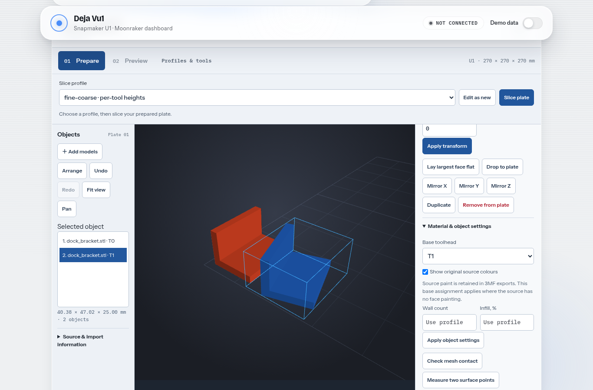
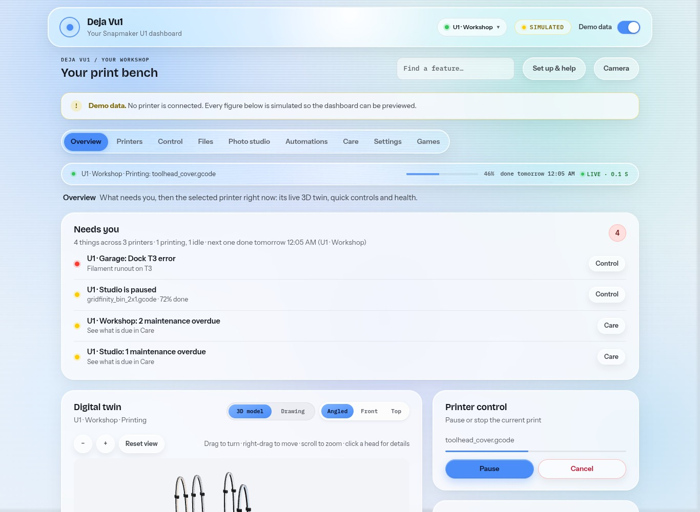
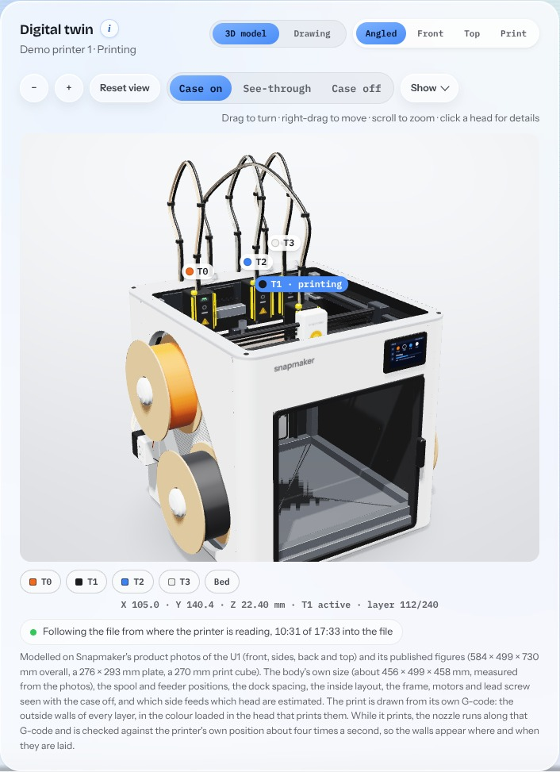
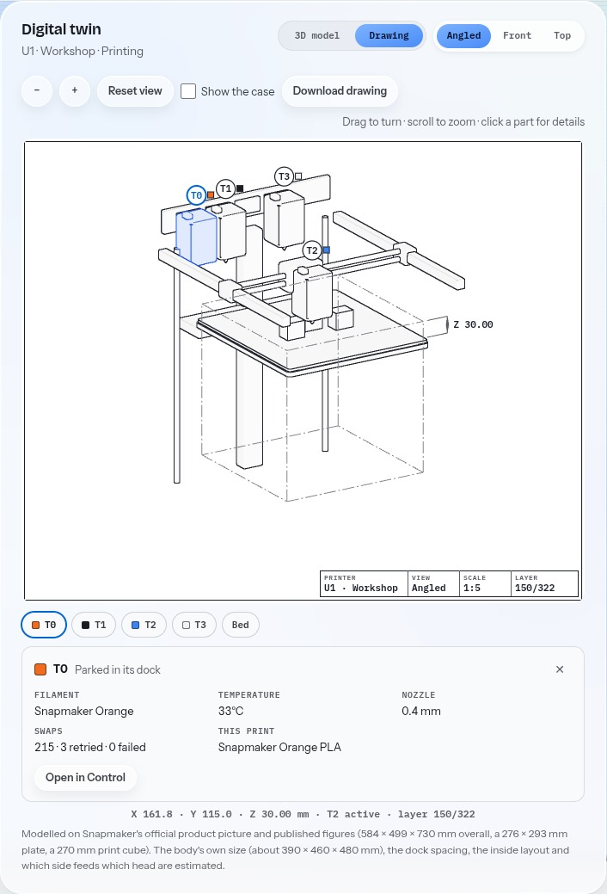
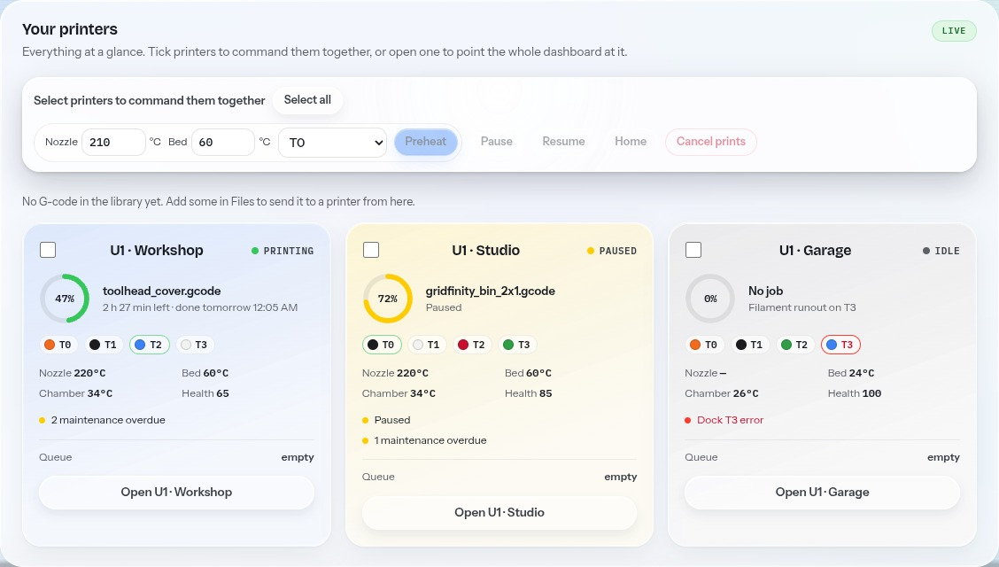
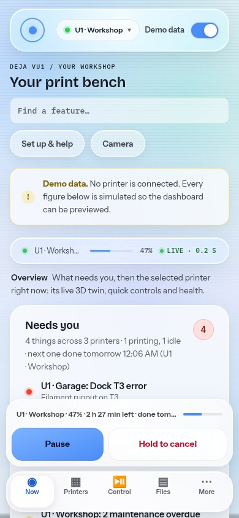

Free · open source · for the Snapmaker U1
One screen for every U1 you run.
See which printer needs you. Prepare a plate, inspect its layers, and review the checks before you start. A free, open-source workspace for Snapmaker U1 printers that runs on your own computer: open it in a browser, in its own app window or on your phone.
The 75-second launch film (version 18), filmed with the built-in demo printers. Its figures are demo data, and the phone’s address is an example. Sound on.
Ways to use it
One computer runs it. Any screen opens it.
- Try it hereThe online demo runs in this browser, playing a recording of three simulated printers. Nothing to install.Open the demo
- A browser tabRun Deja Vu1 on your Windows, Mac or Linux computer, or a Raspberry Pi, and open
localhost:8000.How to run it - Its own windowInstall it as an app from Chrome or Edge, or let the launcher open an app window with no tabs or address bar.The desktop app
- Your phone at homeOn the same Wi-Fi, open the address the launcher prints. Add it to your home screen.Phone steps
- Your phone awayThrough a private Tailscale connection, or a Cloudflare tunnel protected by Access.Remote access
Every way except the demo opens the same dashboard from the same computer, so a print you pause on your phone shows as paused on the computer. Your printers need nothing installed: Deja Vu1 talks to Moonraker, the web service already on every U1.
Why it exists
The questions you walk over to the printer to answer.
A paused job on one machine. A dock fault on another. A plate that has finished. Deja Vu1 brings those separate checks into one view.
Is it still printing?
Needs you brings faults, paused jobs and finished plates to the top. Open the printer from that list, or configure a notification through ntfy, Discord or Telegram. Update freshness depends on the printer and network.
What is this file asking the printer to do?
Inspect layers, tool changes and requested speeds. Pre-flight flags extrusion outside the 270 mm build cube, unknown toolheads and unsafe temperatures, with line numbers you can inspect.
Is the right filament loaded?
Compare the file’s requirements with what the printer reports loaded. A known mismatch blocks the start. Missing filament information stays unknown and asks you to check by eye.
What needs checking before I start?
Confirm Print puts the file, printer, filament and nozzle checks beside maintenance warnings and available estimates. The server checks again when you start. These checks help you review a job; they do not guarantee a successful print.
What's inside
From a plate on screen to a job you can review.
Edit objects, assign physical heads T0–T3, slice through an engine you install, then inspect the output in the same workspace.

Preparation workspace from the recorded Linux checks. Slicing needs a separate compatible engine.
Watch
- Live printer stateA 250 ms server loop shares updates with your browsers. Freshness depends on the printer and network; polling is the fallback.
- Needs youEvery printer ranked by what wants a person: faults, paused or finished prints, idle printers with work waiting.
- TelemetryEvery head's temperature against target with a trace, filament, nozzle and swap counters; bed, chamber, position, layer and timing.
- Farm deskA 24-hour dispatch line for every printer, the best printer for a file, what each idle printer can print now, filament needed and cost per piece.
- Whole fleetState, progress, docks, temperatures and a health score for every printer, and when each will finish.
- Digital twinFollow the head, bed and docks in a 3D model or drawing. The body size and internal layout are estimated; the model is not a camera feed.
- Dock statusSee the four heads’ reported states on screen. A WLED bridge is optional; physical dock-ring drivers remain unfinished.
- Start from your phoneReview pre-flight and Confirm Print checks before starting.
- Mixed layer heightsOne fine base layer, each head printing a whole multiple of it, with smart set-ups and a section view of the passes.
- 106 OrcaSlicer settingsQuality, strength, speed, support and others, laid out like Orca's own tabs, for an engine you install.
- Skip one objectWhen one part on a full plate fails, skip that one and let the rest finish.
- Prepare, slice, inspectEdit objects and profiles in one workspace, slice with an external engine, then inspect layers, tools, speed and events.
- Honest controlsA command the printer refuses is shown as refused, in words, never as done.
Make
- Photo-to-Print StudioMake four-tool colour tiles, measured-swatch layered models or image reliefs. Physical colour accuracy needs calibration.
- MakerWorld, NexPrint and Orca to U1Converts supported projects for the U1 and separates a selected plate for slicing. Complex vendor paint, textures and settings remain limited.
- View on your deskAR preview on supported Android/WebXR browsers over HTTPS. Uses the original model geometry.
Run
- AutomationsWhen this happens, do that: notify, set a light, pause the print. Every firing logged with what really happened.
- Notificationsntfy, Discord or Telegram, for the events you pick in Automations. Urgent rules bypass quiet hours; delivery failures are reported.
- Smart homeWLED lights and Home Assistant sensors, through their own APIs.
- App-data recoveryValidate a backup and restore into a separate copy, with automatic actions disabled.
- LogbookProblems, what fixed them and the print hours at the time, per printer; reported failures are logged by themselves.
- Cost per printFilament by material plus electricity, as the print runs.
- Ten gamesFor while a long print runs. They pause when you look away.

The Overview with the built-in demo printers (Demo data). The figures in these pictures are demo data.


Two views of one software model. Body size and internal geometry are estimates; these are simulated readings, not camera images.


The fleet view, and the same dashboard on a phone. Demo printers.
How it's checked
Built from the source, checked by machine.
You should know exactly what you're running. The repository has the details.
Checked
- The printer connection was written from the Moonraker, Klipper and U1 source code Snapmaker publishes, and tested against a stand-in Moonraker built from that source, over real network connections.
- Automated tests run with nothing but Python; see the repository for current results.
- Workspace checks passed in Chromium at 1366 and 390 pixels: editing, profiles, actual slicing, preview and Confirm Print entry.
- Different physical-head heights were verified in actual Linux engine output. Backup recovery and its generated Linux launcher were exercised.
- WLED, Home Assistant, ntfy, Discord and Telegram checked against each service's own source or documentation.
- Representative converted plates passed the Linux engine.
- Camera pictures and printer sign-in were checked against the code of Snapmaker’s Moonraker and the community Extended Firmware.
Run it
Your computer runs it.
Your phone opens it.
Install in one paste. Copy the block for your computer, paste it and press Enter. It downloads the newest release into Documents and starts it.
$ProgressPreference = 'SilentlyContinue'
$dest = Join-Path ([Environment]::GetFolderPath('MyDocuments')) 'Deja_VU1'
Invoke-WebRequest 'https://github.com/Jbyjre/Deja_VU1/releases/latest/download/deja-vu1-update.zip' -OutFile "$env:TEMP\dejavu1.zip"
Expand-Archive "$env:TEMP\dejavu1.zip" -DestinationPath $dest -Force
Start-Process "$dest\start-windows.bat"No Python yet? Paste winget install -e --id Python.Python.3.12 into PowerShell first, then close and reopen it.
curl -fL -o /tmp/dejavu1.zip https://github.com/Jbyjre/Deja_VU1/releases/latest/download/deja-vu1-update.zip
python3 -m zipfile -e /tmp/dejavu1.zip ~/Documents/Deja_VU1 && chmod +x ~/Documents/Deja_VU1/*.command ~/Documents/Deja_VU1/*.sh
cd ~/Documents/Deja_VU1 && python3 start.pyIf a Mac asks to install the command line developer tools, click Install, then paste the block again: that is how macOS adds Python.
No code? Install Python 3.8+, download the newest release ZIP (or clone it with GitHub Desktop), and double-click the launcher. This website plays a demo recording; real readings need your own running copy.
Already installed? Update in one paste. It stops Deja Vu1 in Documents, installs the newest release over it and starts it again. Your data stays. The app has the same block under Settings → Version & updates.
$ProgressPreference = 'SilentlyContinue'
$dest = Join-Path ([Environment]::GetFolderPath('MyDocuments')) 'Deja_VU1'
try { Invoke-RestMethod -Method Post 'http://localhost:8000/api/app/stop' -TimeoutSec 5 | Out-Null; Start-Sleep 2 } catch {}
Get-CimInstance Win32_Process -Filter "Name LIKE 'python%'" | Where-Object { $_.CommandLine -like '*Deja_VU1*app.py*' } | ForEach-Object { Stop-Process -Id $_.ProcessId -Force }
Invoke-WebRequest 'https://github.com/Jbyjre/Deja_VU1/releases/latest/download/deja-vu1-update.zip' -OutFile "$env:TEMP\dejavu1.zip"
Expand-Archive "$env:TEMP\dejavu1.zip" -DestinationPath $dest -Force
Start-Process "$dest\start-windows.bat"curl -s -o /dev/null -X POST http://localhost:8000/api/app/stop; sleep 2; pkill -f 'Deja_VU1/backend/app.py'
curl -fL -o /tmp/dejavu1.zip https://github.com/Jbyjre/Deja_VU1/releases/latest/download/deja-vu1-update.zip
python3 -m zipfile -e /tmp/dejavu1.zip ~/Documents/Deja_VU1 && chmod +x ~/Documents/Deja_VU1/*.command ~/Documents/Deja_VU1/*.sh
cd ~/Documents/Deja_VU1 && python3 start.py- On your computer. Paste the block for your computer, or use a no-code option: Python 3.8+, then the release ZIP or GitHub Desktop, then double-click the launcher. Keep its window open and the computer awake.
- Connect your printer. Open Set up & help, choose Connect my printer, then Find printers or enter its address. Test and connect. Keep Demo data off for real readings.
- On your phone at home. Same Wi-Fi, then press Connect your phone on the Overview and scan the code with the phone’s camera. It opens and pairs by itself; nothing to type. Or type the “From a phone” address from the launcher, such as
192.168.1.20:8000(a colon before the port, not a dot). Pairing is optional, not a login. - Keep it on your home screen. Safari → Share → Add to Home Screen, or Chrome’s menu → Add to Home screen. HTTP may offer only a shortcut; secure HTTPS enables full installation and the offline explanation. Offline never means live readings.
- Away from home. Use private Tailscale Serve, or a Cloudflare tunnel with Access protection configured first. Deja Vu1 has no login. Do not forward its port through your router.
- Out of the browser, if you like. Settings → Desktop app installs it as an app from Chrome or Edge, or makes the launcher open its own window.
- Stay up to date. Settings → Version & updates checks GitHub and installs the new version, for downloaded and GitHub Desktop copies alike. Your settings stay put.
Exact setup and firewall steps · Private remote access
An optional name stays only in your browser. Automatic update checks are off until you turn them on in Settings; a check sends neither your name nor printer details.